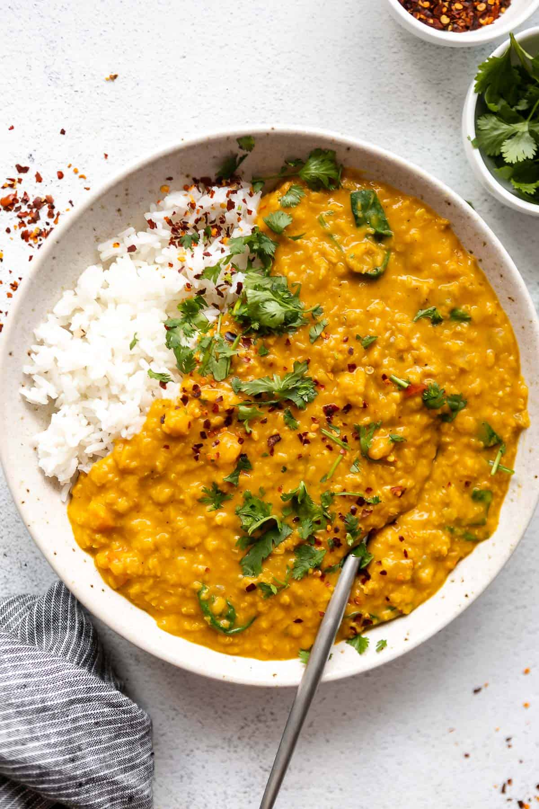

Wannabe Dahl

Description
A very easy to make dahl that is not very authentic but definitely tastes good
Ingredients
- Rice
- Red lentils
- Coconut cream
- Tomato paste
- Fresh tomate
- Onion
- Garlic
- Sour cream
- Fresh parsley leaves
Recipe
- Chop onion and garlic, fry on low heat until getting golden
- Add red lentils and fry for a little bit
- Add coconut cream and tomato sauce
- Chop tomatoes and add to dahl
- Let it simmer on low heat till lentils are soft (30+mins)
- Serve with rice and top with sour cream and fresh parsley leaves
- Optional: buy frozen prata in supermarket, fry and serve with dahl
- Enjoy!
Home